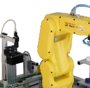

<!--
  Generated template for the HuatecPage page.

  See http://ionicframework.com/docs/components/#navigation for more info on
  Ionic pages and navigation.
-->
<ion-header>

  <ion-navbar>
    <ion-title>华晟智造</ion-title>
  </ion-navbar>

</ion-header>


<ion-content >
  <!-- 左侧布局 -->
  <div class="on_left">
    <div class="picture_summary">
      
    </div>
    <!-- <button ion-button full>北京市通州区国企大道III华晟智造科技有限公司</button> -->
    <div class="place">
      北京市通州区国企大道III华晟智造科技有限公司
    </div>
    <!-- <div class="statistic_analysis">
      统计分析
    </div> -->
    <button ion-button  class="statistic_1" style="width:90%">统计分析</button>
    <div #EchartsContent class="EchartsDiv">
      
    </div>
    <!-- <div #EchartsContent class="EchartsDiv"></div> -->

  </div>

  <div class="on_middle"></div>
  
  
  <!-- 右侧布局 -->
  <div class="on_right">
    <div class='right_1'>
      <table>
        <tr style="height:45px;font-size: 30px">华晟智造</tr>
        <tr style="height:20px">i状图标  类型 ：工程</tr>
        <tr style="height:20px">时间图标 时间</tr>
      </table>
      
    </div>
    <button ion-button class='right_b' style="width:90%">数据分析</button>
    <div class="equipment">
      <table style="margin-top:10px">
        <tr>
          <td>设备数量:</td>
          <td>   2</td>
        </tr>
        <tr>
          <td>在线设备:</td>
          <td>   1</td>
        </tr>
        <tr>
          <td>在线人数:</td>
          <td>   1</td>
        </tr>
        <tr>
          <td>故障数量:</td>
          <td>   0</td>
        </tr>
      </table>
    </div>
    <button ion-button class='right_b2' style="width:90%">综合分析</button>
    <div #tubiao class="compsitive_picture">
      
    </div>
  </div>


  <!-- <div #EchartsContent class="EchartsDiv"></div> -->

</ion-content>
